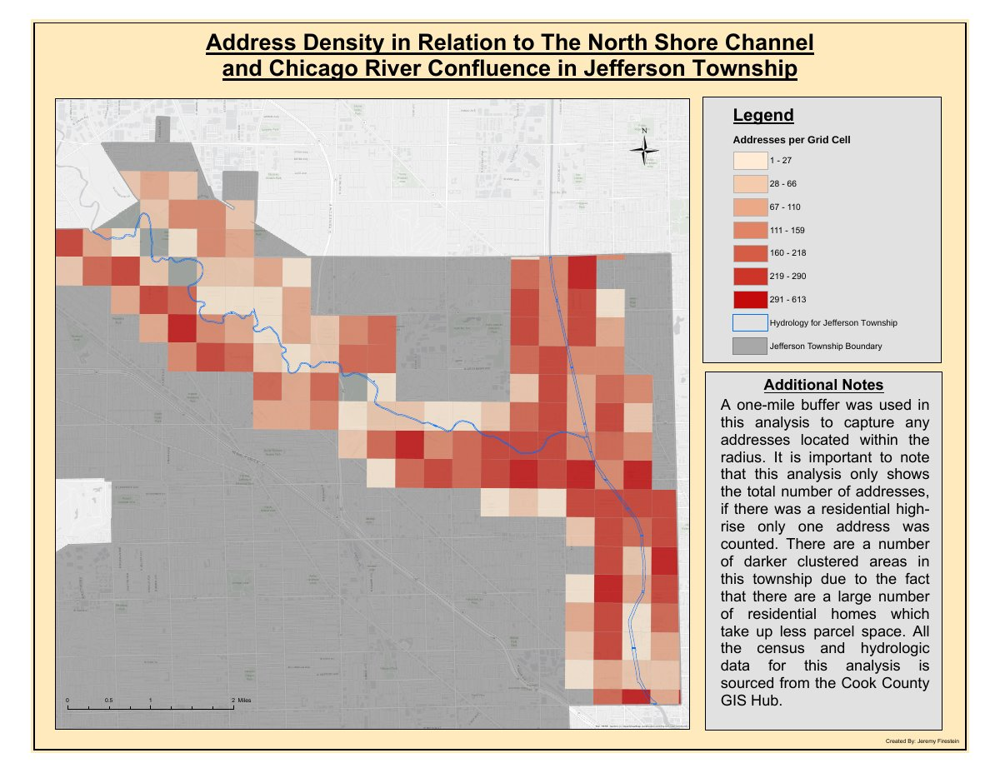
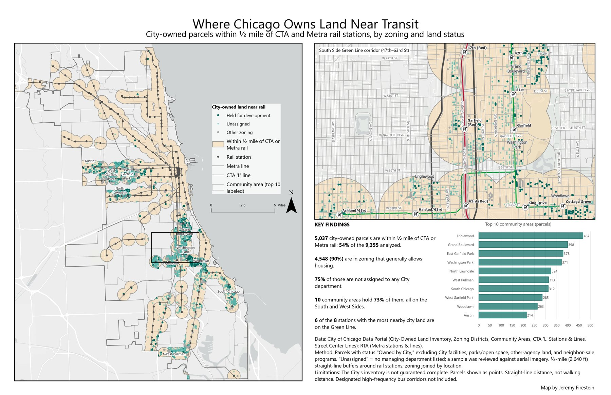
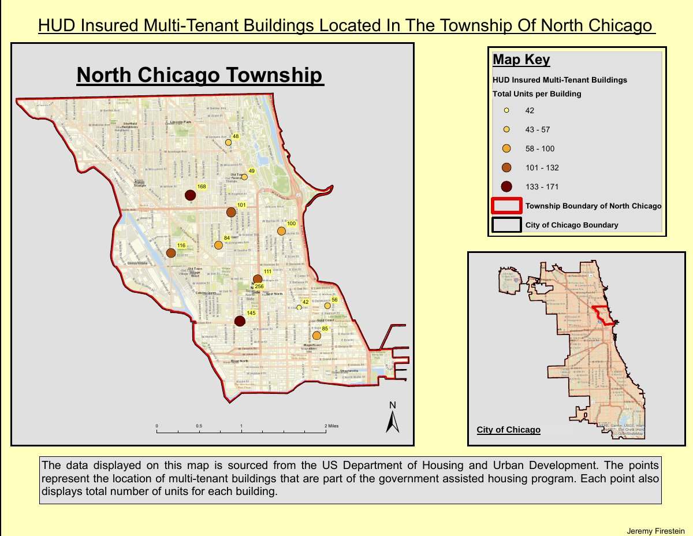

Address density near the North Shore Channel
Addresses counted per grid cell within a one-mile buffer of the North Shore Channel and Chicago River confluence in Jefferson Township. Cook County GIS Hub data.
Open the PDF (7.9 MB)GIS professional in Chicago with nine years of spatial analysis, mapping, and GIS data work in public safety, telecommunications, and engineering.

Chicago's Connected Communities Ordinance extended transit-oriented development zoning benefits to land within half a mile of every CTA and Metra rail station. I mapped which city-owned parcels fall inside those areas and which are zoned in a way that generally allows housing.
How quickly the City closed nearly 300,000 311 service requests from April through June 2026, broken down by request category, community area, and police district. Filter by category, or select a community area on the map to filter the KPIs and the category chart.
Two maps made in ArcMap from Cook County and federal open data.

Addresses counted per grid cell within a one-mile buffer of the North Shore Channel and Chicago River confluence in Jefferson Township. Cook County GIS Hub data.
Open the PDF (7.9 MB)
Government-assisted multi-tenant buildings in North Chicago Township, sized by total units, with a citywide locator map. U.S. Department of Housing and Urban Development data.
Open the PDF (2.8 MB)Clarity Partners, City of Chicago public safety
Feb 2023 to present
Compiled and standardized a 600,000+ record address dataset for the City's new computer-aided dispatch system. Designed the special-events schema and built dashboards that track events, squad car locations, and calls for service, along with crime-tracking dashboards by district and neighborhood. Automated district and beat map exports with Python. Deliver PDF maps for city aldermen and public safety staff, and maintain versioned feature services in ArcGIS Online and Enterprise.
Wyyerd Fiber
Jul 2022 to Feb 2023
Automated construction progress reporting through an API and SQL calculations and built leadership dashboards. Owned the construction-progress dashboard for stakeholders, learning the workflow from directors before automating it with ModelBuilder and the API. Tracked construction work orders and permit status, and administered an ArcGIS Online organization of 15 to 20 users.
Ledcor Technical Services
Jul 2018 to Jul 2022
Worked with project managers and first-time GIS users to build dashboards and web apps, built FME workflows for bulk KMZ conversion, and led a three-person team post-processing field GPS data. On a fiber-to-the-home pre-construction review, cleaned, validated, and loaded field GPS data into the client's schema. Published per-project feature services for designers working in AutoCAD, reviewed their designs for attribute accuracy (handholes, poles, fiber counts, cable sizes, footage), and merged LiDAR imagery into raster basemaps.
Construction CAD Solutions
Apr 2017 to Jul 2018
Performed wetland and protected-lands reviews, extracted features from LiDAR, and drafted fiber networks in AutoCAD. Turned redlines and design managers' route instructions into plan sheets for permit submittals to IDOT and city permitting departments, and revised drawings after design and permit review.
ArcGIS Pro, ArcGIS Online and Enterprise, ArcSDE, QGIS, AutoCAD
Python and ArcPy, FME, ModelBuilder, APIs, Windows Task Scheduler
Oracle SQL, geocoding and address standardization, data QA, Excel
ArcGIS Dashboards, Experience Builder, Tableau, print map layouts
B.A. Environmental Studies, Northeastern Illinois University, cum laude, minors in Geography and GIS. Python and SQL certificates, Oakton Community College.